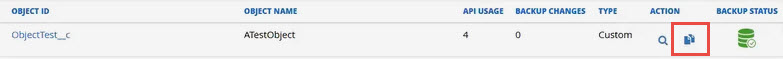
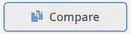
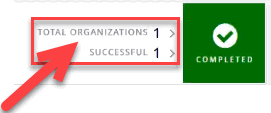
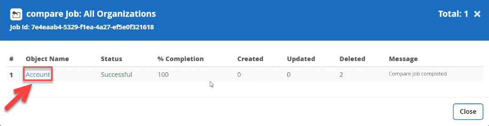
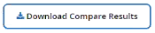

Demander de modifier un document
Demander de modifier un document Modifier sur GitHub
Modifier sur GitHub Guide des contributeurs
Guide des contributeursComparer et restaurer les différences de sauvegarde
Contributeurs
Vous pouvez utiliser SaaS Backup pour Salesforce pour comparer les différences de sauvegarde et les restaurer.
-
Dans le volet de navigation de gauche, cliquez sur travaux.

-
Sous travaux terminés récents, sélectionnez la sauvegarde contenant l’objet pour lequel vous souhaitez comparer les sauvegardes.
-
Cliquez sur l’organisation.
-
Sélectionnez l’objet pour lequel vous souhaitez comparer les sauvegardes.
-
Cliquez sur l’icône de comparaison.
-
En regard de sauvegarde précédente, sélectionnez la première date de la sauvegarde que vous souhaitez utiliser pour la comparaison.
-
En regard de Current Backup, sélectionnez la deuxième date de la sauvegarde que vous souhaitez utiliser pour la comparaison.
-
Cliquez sur COMPARER.

S’il n’y a pas de différence entre les deux sauvegardes sélectionnées, le travail de comparaison n’est pas créé. -
Cliquez sur Afficher la progression des travaux.
Une fois le travail terminé, il apparaît sous travaux terminés récents.
-
Cliquez sur le nombre d’organisations ou sur le nombre réussi.
Une fenêtre s’affiche, indiquant l’état du travail.
-
Cliquez sur le nom de l’objet pour voir les résultats. Le récapitulatif des travaux de comparaison s’affiche avec le nombre d’enregistrements créés, mis à jour et supprimés dans l’objet entre les deux sauvegardes sélectionnées. Vous avez la possibilité de télécharger les détails de la tâche de comparaison.
-
Pour télécharger les détails de la tâche de comparaison, cliquez sur .
-
Décompressez le fichier pour voir les résultats.
-
-
Cliquez sur RESTAURER.
-
Sélectionnez MIS À JOUR pour restaurer tous les enregistrements mis à jour. Sélectionnez SUPPRIMÉ pour restaurer tous les enregistrements supprimés. Vous pouvez également sélectionner les deux si les options sont disponibles.
-
Cliquez sur SUMBIT.
Le travail est restauré sans écrasement ni relation.